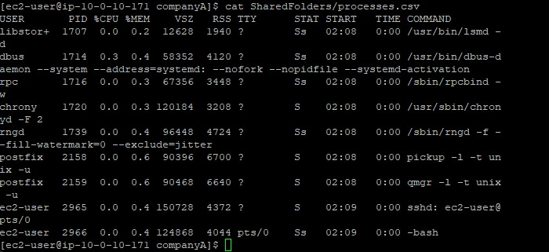
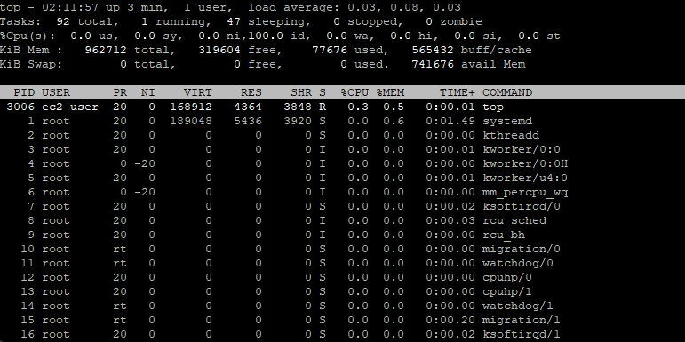
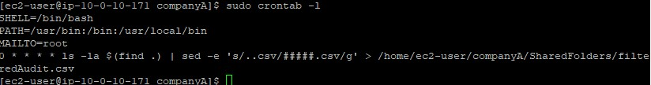

Process Listing
Used ps -aux filtered by grep -v root to log non-root
processes into a CSV file via tee.
Monitor system performance, list running processes, and automate repetitive tasks by configuring a scheduled cron job.
Connected via PuTTY (as described in Lab 225). Generated a filtered log file of system processes using ps and grep. Examined the real-time resource utilization via top. Established an automated auditing task with crontab.
Used ps -aux filtered by grep -v root to log non-root
processes into a CSV file via tee.
Executed top to observe real-time CPU, memory, and thread metrics,
identifying the number of active, sleeping, and zombie tasks.
Configured a repetitive task in the cron tab to run a file filtering script automatically.
Detailed record of each task performed during the lab.
/home/ec2-user/companyA.sudo ps -aux | grep -v root | sudo tee SharedFolders/processes.csv.cat SharedFolders/processes.csv.
grep -v argument implements an inverse match. By searching for
root with this flag enabled, it removes every row containing that word.
top command to view dynamic, real-time metrics of the system.q to exit the dynamic monitoring interface.top -hv to find usage and version information.
sudo crontab -e to securely edit the scheduled tasks file
using the default text editor (usually Vim).SHELL, PATH, and MAILTO environment variables.0 * * * * ls -la $(find .) | sed -e 's/..csv/#####.csv/g' > /home/ec2-user/companyA/SharedFolders/filteredAudit.csv.:wq.sudo crontab -l, which lists the installed cron jobs.
0 * * * * determine when the job runs: minute, hour, day of month, month, and day of week.
This syntax schedules the script to run exactly at the top of every hour.
Commands utilized in this lab.
psReports a snapshot of the current processes running locally.
-aux : Lists all processes owned by all users (-a), user-oriented format (-u), including those without a terminal (-x)grepSearches input text strictly matching a predefined pattern.
-v : Inverts the match, returning everything except queries aligning with the patterntopProvides a dynamic real-time view of running processes prioritized by hardware resource consumption.
q : Terminates the top viewcrontabA software utility driving task scheduling and background automation via a daemon.
-e : Opens the crontab script file inside an editor for modifications-l : Lists the currently active, configured jobsps
and the real-time continuous feed given by top.-v
flag on the grep command.top screen outputs evaluating states like zombie or sleeping.cron utility.
Detecting resource exhaustion prevents critical server outages. Leveraging top allows rapid diagnoses
of memory and CPU constraints by exposing the exact software threads causing bottlenecks.
Automating system hygiene elements via cron is indispensable. Without scheduled routines, administrators
must manually audit access files resulting in human error rates and inefficiencies.